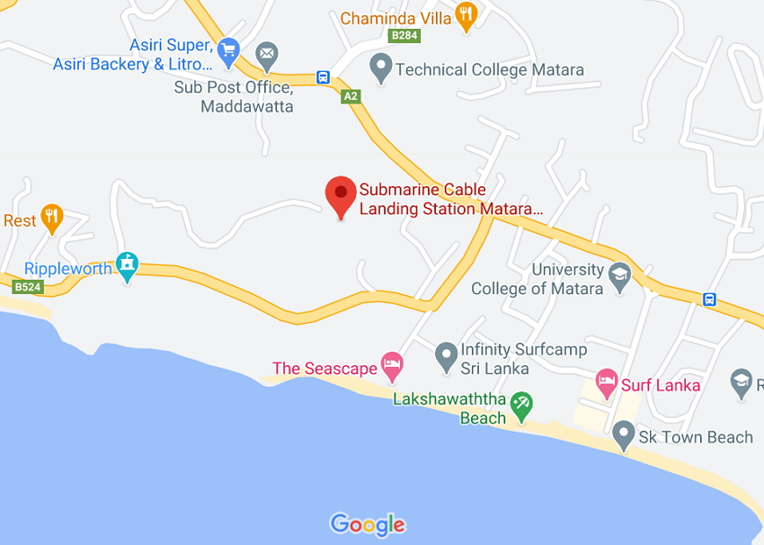

We are the best restaurant in Matara
Royal Palace is already known as one of the best and most reliable restaurant in Matara.
We are the best choice in the mind of many as a relaxing lodge for local as well as foreign tourists.
our intention is to serve you more cordially, reliability and to the best of our ability.
our staff is committed to this.We also make sure to make the time you spend this restaurant more enjoyable.
We have organized various enjoyable programs here that will entertain you throughout your time here. So, our vision is to make the time you spend here memorable.
We are pleased to announce that we have been very successful in this endeavor for the past ten years.We have a very experienced staff and a very advanced management team
and we have talented chefs and all of them are committed to serve you.There’s a lot to see in and around the city of Colombo. Dotted with colonial architecture, strewn with quaint cafes and soaked in the plushness of a modern life, it’s set to entertain you.
What’s more? The unique experiences at our in-house restaurants, spa and pools takes all of it a notch higher. So, make the most of your spare time with us!
When restaurants are booming up in the city, what makes our restaurant stand out from others is the unique and mouthwatering taste you will experience. We not only fill your tummy absolute flavours but also fills your heart with the love of food.

